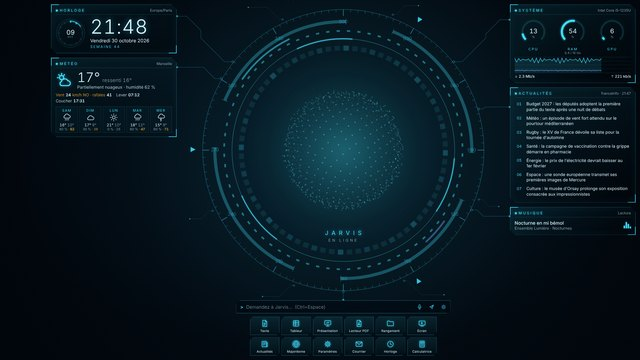

Fond Jarvis
Un fond d'écran animé pour Windows : horloge, météo, actualités, état du PC, raccourcis, et l'assistant qui vous répond. Guide en 5 minutes.

Installer (une seule fois)
- Installer Lively Wallpaper, application gratuite (logiciel libre) qui affiche une page web en fond d'écran.
Ouvrir Lively dans le Microsoft Store
Vérifiez que l'éditeur est rocksdanister et que l'appli est gratuite (il existe des copies payantes au nom proche, comme « Lively Wallpaper Metro »). Cliquez Obtenir, puis ouvrez Lively. - Télécharger le fond (fichier .zip, à ne pas décompresser) :
Télécharger fond-jarvis-lively.zip - Glisser le .zip dans la fenêtre de Lively (page Bibliothèque). La vignette « Fond Jarvis (Suite MAG) » apparaît.
Autre façon : bouton Ajouter (+) › Sélectionner un fichier › choisir le .zip. - Cliquer sur la vignette (ou clic droit › Définir comme fond d'écran). Le fond s'affiche derrière les icônes du bureau.
- Activer le clavier pour parler à l'assistant au clavier : Lively › Paramètres (roue dentée) › Fond d'écran › Périphérique d'interaction › cochez Clavier. La souris marche déjà.
Plusieurs écrans
Dans Lively, l'icône d'écran en haut (Choisir l'écran) puis Sélectionner la disposition du fond d'écran :
- Écran : un fond par écran (vous choisissez l'écran avant de cliquer la vignette). Chaque écran a ses propres réglages : par exemple « Complet » sur le grand écran, « Sphère seule » sur le portable.
- Dupliquer : le même fond sur chaque écran.
- Étendre : un seul fond à cheval sur tous les écrans (déconseillé ici : la sphère tomberait entre deux écrans).
Régler
- Dans Lively : clic droit sur la vignette › Personnaliser : thème (cyan, bleu, vert, ambre, rouge), disposition (Complet, Épuré, Sphère seule), ville de la météo, seuil de vent chantier, voix, nom de l'assistant (« Jarvis » par exemple), zone libre à gauche pour les icônes, taille du texte, intensité des effets, animations réduites, images par seconde, économie sur batterie, nombre de titres, agenda (.ics).
- Sur le fond : le bouton ⚙ au bout de la barre de commande ouvre tous les réglages, dont l'éditeur de raccourcis (ajouter, retirer, renommer, choisir l'icône).
- Icônes du bureau cachées ? Augmentez la zone libre à gauche (140 px par défaut, une colonne d'icônes fait environ 80 px).
Parler à l'assistant
- Cliquez la sphère, ou faites Ctrl + Espace quand le bureau est affiché, puis tapez : « quelle heure est-il », « quel temps fait-il demain », « minuteur de 10 minutes », « combien font 15 % de 240 », « les titres », « ajoute du pain à la liste de courses », « ouvre le tableur », « ouvre les paramètres Wi-Fi », « thème vert », « aide »…
- Il répond par écrit et à voix haute (voix française de Windows). Pas de son ? Lively › Paramètres › Son : volume au-dessus de 0. Par défaut, Lively ne joue le son que quand le bureau est au premier plan.
- À la voix : dans Lively, le fond d'écran n'a pas accès au micro. Le bouton micro ouvre Majordome (Suite MAG), qui écoute hors ligne. Dans le navigateur (version ci-dessous), le micro du fond marche si le modèle vocal est installé dans Majordome.
Raccourcis possibles
| Type | Exemples | Ce qui s'ouvre |
|---|---|---|
| Applis de la Suite MAG | Texte, Tableur, Présentation, Lecteur PDF, Rangement, Écran, Actualités, Majordome… | Le navigateur par défaut, sur l'appli |
| Sites | https://… | Le navigateur par défaut |
| Réglages de Windows (documentés par Microsoft) | ms-settings:, ms-settings:network-wifi, …:bluetooth, …:display, …:sound, …:powersleep, …:batterysaver, …:windowsupdate | Paramètres de Windows, à la bonne page |
| Applis de Windows (documentées) | mailto:, ms-photos:, ms-windows-store://home, msnweather://forecast | Courrier, Photos, Store, Météo |
| Applis de Windows (courantes, non documentées) | ms-clock:, calculator:, ms-screenclip: | Horloge, Calculatrice, Capture d'écran |
| À essayer | file:///C:/ | Explorateur (selon la version de Lively) |
Impossible depuis une page web (Lively compris) : lancer un programme .exe quelconque, éteindre, redémarrer, verrouiller ou mettre en veille Windows, régler le volume. Pour verrouiller : Windows + L. Le raccourci « Alimentation et veille » ouvre la page de réglages correspondante.
Batterie et performances
- Lively met le fond en pause quand une appli est en plein écran (réglage par défaut) : le fond ne consomme alors presque rien.
- Sur un portable débranché, le fond passe à 15 images par seconde et allège la sphère (réglage « Économie sur batterie »).
- Encore trop gourmand ? Réglez Images par seconde sur 15 ou 10, ou cochez Réduire les animations.
Sans Lively
Le même fond s'ouvre comme une page web (plein écran avec F11), dans la Suite MAG sur PC. Là, il partage avec Majordome et Agenda (même navigateur) les notes, listes, l'agenda et le modèle vocal.
Ouvrir la version web Toutes les applis de la SuiteMettre à jour
Le fond vérifie une fois par jour si une nouvelle version existe (⚙ › À propos). Pour l'installer : téléchargez le nouveau .zip, supprimez l'ancienne vignette dans Lively (clic droit › Supprimer) et glissez le nouveau .zip. Les réglages faits dans le panneau ⚙ sont gardés.
Problèmes fréquents
- Écran noir : Lively › Paramètres › Fond d'écran : moteur web WebView2 (par défaut). WebView2 est fourni avec Windows ; s'il manque, Lively propose de l'installer.
- Météo « Position inconnue » : saisissez votre ville (Personnaliser › Ville de la météo).
- Les touches ne font rien : cochez Clavier (étape 5) et cliquez d'abord sur le bureau.
- Pas de jauges CPU / RAM : elles n'existent que dans Lively (données fournies par Lively). Dans le navigateur, le panneau Système est masqué.
Création originale de la Suite MAG sur PC. Données utilisées : Open-Meteo (météo), franceinfo (titres). Rien d'autre ne quitte l'ordinateur.